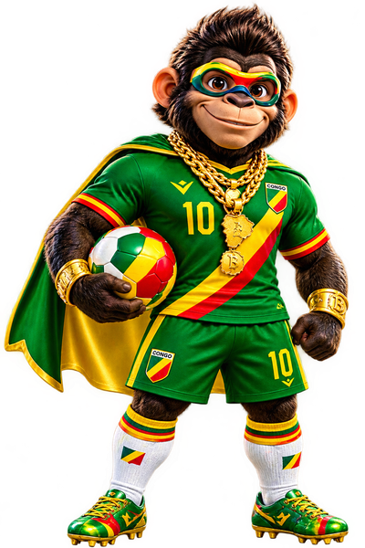
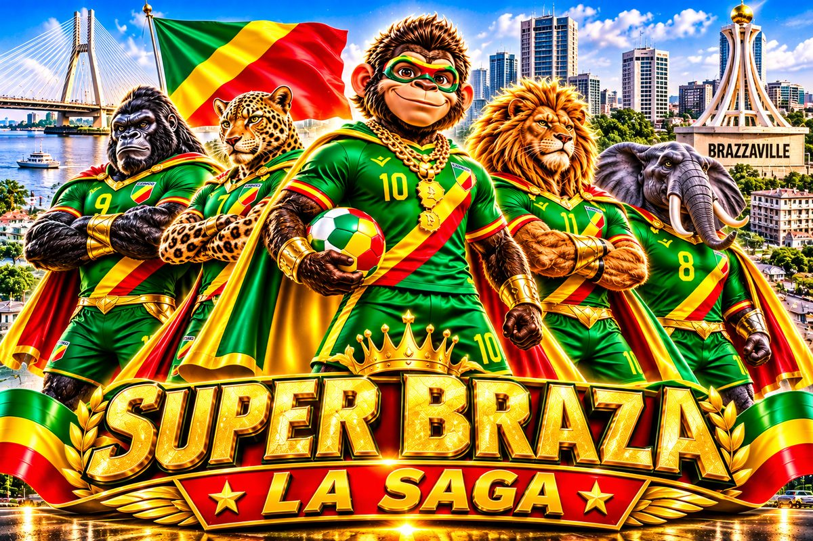

Mes maillotsCONGO

✏️ Recopie la réponse dans ton cahier pour bien la comprendre.
Anglais 🇬🇧
Pose ta question en anglais, avec le micro ou en écrivant. Super Brazza répond en anglais, puis en français.
Galerie de coloriage 🎨
Galerie récitation 🎙️
Tirs au but ⚽
À propos de Noxylia 🏢
Espace Parent 📊
Mes badges 🏅
Anniversaire 🎂
Chansons 🎵
Mon pays 🇨🇬
Hymne national 🇨🇬

Cette rubrique arrive bientôt. Super Brazza la prépare !